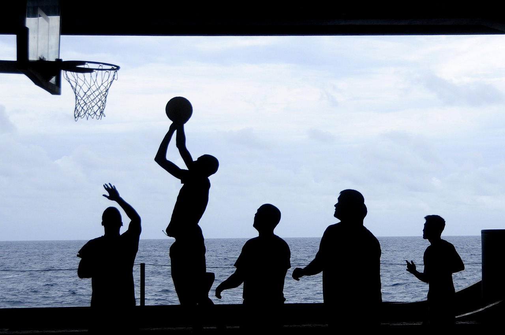

Basketball

Jake Will
04 June 2023
5 Exercise Basketball Player Should Be Using To Develop Strenght
This artical was written by Jake Willhoite from Healthlisted.com Strength in basketball isn't all about a massive body mass or a reipped muscles